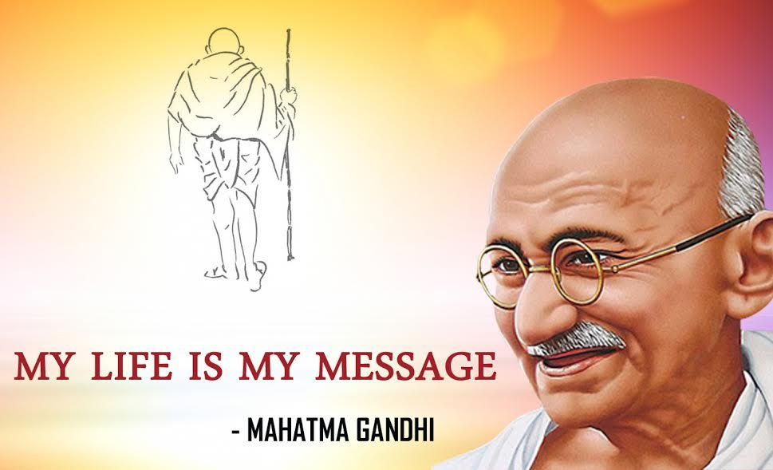

“The greatness of a nation and its moral progress can be judged by the way its animals are treated.”
|
|
“The greatness of a nation and its moral progress can be judged by the way its animals are treated.” |
|
“A man is but a product of his thoughts what he thinks, he becomes.” |
:
|
|

Primary education:Gandhi ji was born in Porbandar in 1869 and received primary education in the city. He was not a bright student and used to learn by writing with his finger in the dust. He was neither considered to be very gifted in the classroom nor in the playing field. Mahatma Gandhi Secondary And Senior Secondary Education Delhi:They are running a secondary and higher secondary board sitting from west bengal giving false address in Delhi. They are cheating thousands of students.We are also the victims. Please take necessary steps for the sake of interest of the students Mahatma Gandhi And Higher Education::Mahatma Gandhi was wrote an article, the titled was ‘National Education’ published in Young India on 1 September, 1921 has written that it might be true regarding other countries but in India where 80% of the population is occupied with agriculture and 10% of it with industries, it is an offence to make education merely literary1. It is apparent from these lines that according to Mahatma Gandhi, education is not only to gain literary knowledge. Graduate education:A young man or woman may pass the Graduate or the Post-graduate examination with first division or may further acquire the M. Phil. or Ph.D. degree, but still he/she does not become self-dependant and is not able to channelize his/her future along successful lines by worrying about his/her day-to-day problems. In such a case, will the education received by him/her or the degrees acquired by him/her be regarded as meaningful? In my opinion such an education or degree is useless. This reality can be perceived not only in India but in other countries also. Therefore, Mahatma Gandhi’s statement that education does not mean getting literary knowledge is true even in the context of the world. |
Home / Privacy Policy / Terms of Service / Feedback
By Bhoopendra Yadav
CBSE© Festivals of India / All Rights Reserved